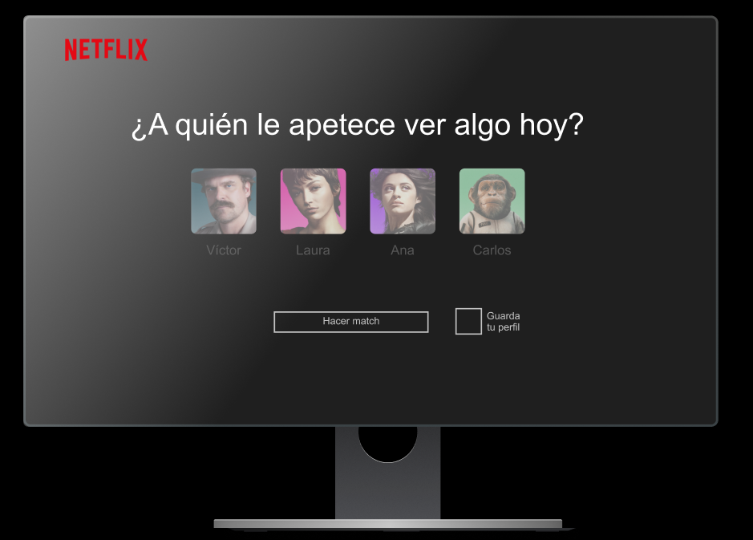
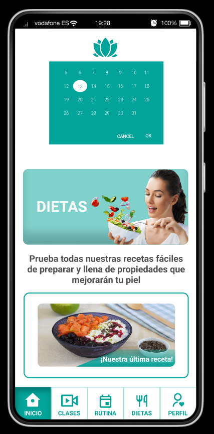
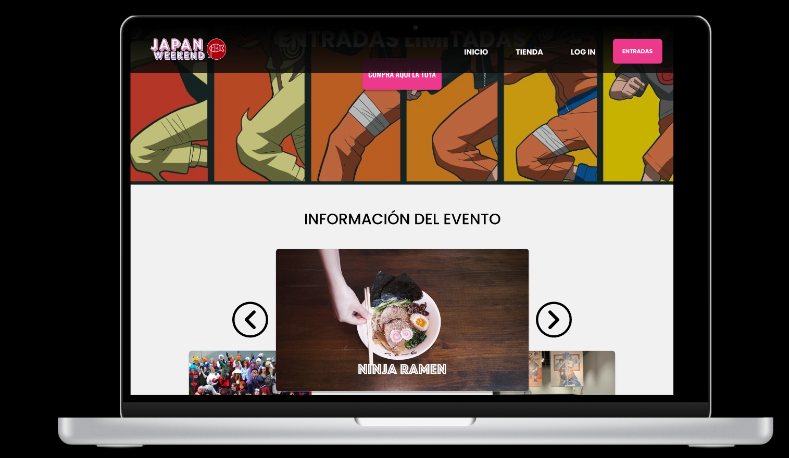

“Trained at Ironhack as Ux Ui Designer I have researched and created different digital products and new features for existing products. Creativity and problem solving are the characteristics that have made up all my work areas”

Netflix
Nueva funcionalidad para usuarios basada en el emparejamiento de perfiles
Investigando posibles nuevas funcionalidades de Netflix y entrevistando a muchos usuarios de la plataforma de Streaming pude ver que sugía un problema con aquellos usuarios que compartían cuenta y que teniendo perfiles diferentes querían ver contenido común.
Gracias a la configuración de un sistema de grupos pude plantear un "matcheo" de perfiles para organizar el contenido común de más de un perfil.
Face Yoga
App Wellness de Yoga facial y personalización de rutinas estéticas saludables
Tras investigar los problemas y las necesidades de mujeres que no disponían de suficiente tiempo y dinero para cuidar la estética de su cara con tratamientos de gamas superiores, pude idear una App que se ajustaba a sus necesidades.
La App cuenta con una amplia batería de ejercicios faciales para combatir los primeros signos de la edad y las marcas de estrés. Rutinas totalmente personalizables según tus preferencias y tu tiempo disponible cada día. Y una gran cantidad de recetas variadas y antioxidantes para cuidar tu imagen al mismo tiempo que cuidas tu salud.
Festival Design
Web del festival Japan Weekend Madrid, compra de entradas y tienda online
Buscando la forma de resolver la problemática de este festival, que atraía cada vez menos usuarios, y buscando la forma de refrescar la interfaz de la Web a algo visualmente más acorde al producto del festival, pude dar un lavado de cara a la plataforma.
Creando un evento temático por el vigésimo aniversario de la primera emisión de la serie "Naruto" por televisión, con stanes de comida, exposiciones, torneos y demás experiencias de la temática, se conseguía atraer mas usuarios.
